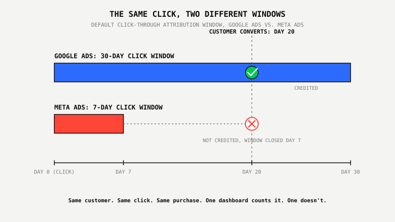
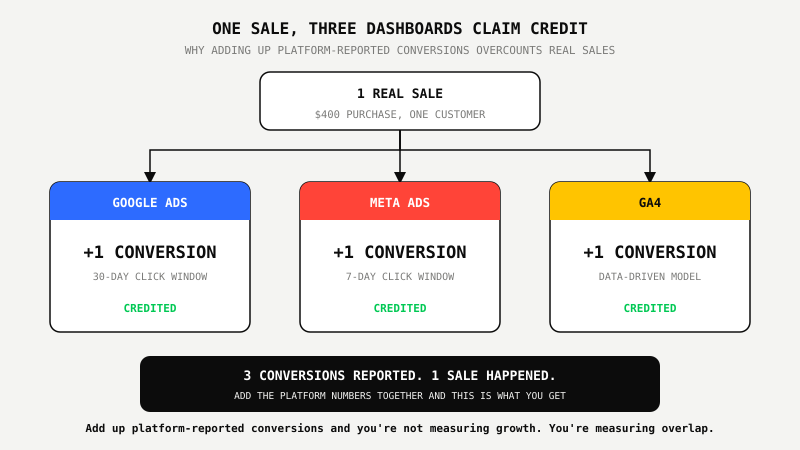

Attribution Windows Explained: Why Your Ad Platforms Never Agree

Key Takeaways
- Google Ads defaults to a 30-day click-through conversion window (Google Ads Help). Meta defaults to 7-day click, 1-day engage-through, and 1-day view-through. The same sale can qualify on one platform and miss the window entirely on the other.
- Meta redefined what counts as a "click" starting March 3, 2026: only link clicks now qualify for the 7-day click window. Likes, shares, saves, and comments moved to a separate 1-day engage-through window, which is why many advertisers saw reported conversions drop with no change in real performance.
- GA4's default attribution model is data-driven, not last-click, but it silently falls back to last-click if an account has fewer than 400 conversions for that action or 20,000 total conversions in the lookback window, so many smaller accounts run on last-click without realizing it.
- Adding up "conversions" reported by Google Ads, Meta Ads, and GA4 for the same period will almost always overcount real sales, because each platform can credit the same purchase using a different window and a different definition of the triggering interaction.
- The fix isn't finding the "right" platform. It's picking one source of truth, usually GA4 tied to real revenue or a CRM, for budget decisions, and reading each ad platform's native numbers as directional, not comparable.
Ask Three Witnesses What Happened And You'll Get Three Different Timelines
A fender bender happens at a four-way stop. Witness one had been staring right at the intersection for the ten seconds before impact. Witness two only glanced up in the final three seconds, phone still in hand. Witness three runs the gas station across the street and pulls an hour of security footage before talking to police. All three watched the same crash. All three describe a different cause, because none of them were watching the same window of time before it happened.
Ask any of them who's at fault and the honest answer depends entirely on how far back they were looking. That's not a flaw in any single witness. It's what happens when three observers use three different windows to judge one event.
Your ad platforms do exactly this with every conversion. Google Ads looks back 30 days before a click. Meta looks back 7. Google Analytics 4 doesn't use a fixed window at all, it runs a model that can quietly fall back to a completely different method without telling you. Three dashboards, one sale, three different verdicts on what caused it.
Google Defaults to a 30-Day Click Window. Meta Defaults to 7.
Google Ads will credit a conversion to an ad click that happened up to 30 days earlier, by default. Meta Ads stops counting after 7. A customer who clicks a Google ad on day one and buys on day 20 gets credited to that ad. The same customer clicking a Meta ad and buying on day 20 gets credited to nothing, because Meta's window closed 13 days earlier.
Google's own Help Center sets the default click-through conversion window at 30 days, with presets available up to 90 days for longer sales cycles. Its engaged-view window, the credit given for someone who saw but didn't click an ad, defaults to just 3 days, and standard view-through credit defaults to 1 day. Search and Shopping campaigns carry no view-through credit at all by default. Meta's current default, after a January 2026 update removed the longer 7-day and 28-day view-through options from its API entirely, is 7-day click, 1-day engage-through, and 1-day view-through, the widest combination now available on the platform.
Neither default is wrong. Google's wider window gives Smart Bidding more credit-signal density to train on, which suits how Google Ads decides who to show ads to next. Meta's narrower window keeps its reported numbers closer to same-week behavior. But a wider or narrower window changes which conversions get counted, not just how fast they get reported, and that's the part that breaks a side-by-side comparison.

Meta Redefined What Counts As A "Click," Starting March 3, 2026
Before March 3, 2026, Meta's click-through attribution counted any interaction with an ad, a like, a share, a save, a comment, a profile tap, not just an actual click to a website or a lead form. After that date, only a link click that sends someone to a destination counts toward the 7-day click window. Everything else, likes, shares, saves, comments, moved to a new category called engage-through attribution, with a fixed 1-day window.
That's a big enough change that many advertisers saw reported click-conversions drop in March 2026 with no change to their actual campaigns, budgets, or creative. The account didn't get worse. Meta just stopped counting some of what it used to count as a click.
If a reporting dashboard, spreadsheet, or client deck compares this month's Meta numbers to a March or earlier baseline, that comparison is measuring a definition change, not a performance change, unless someone adjusted for it first.
GA4 Runs A Third Model, And Falls Back Without Telling You
Google Analytics 4's default attribution model is data-driven attribution, a model that weighs every touchpoint in a customer's path rather than crediting a single click or view inside a fixed window. It's a genuinely different approach than either Google Ads' or Meta's native reporting, which is part of why GA4 numbers rarely match either platform's own dashboard even when they're tracking the same account.
It also comes with a data floor most accounts never check. Data-driven attribution requires at least 400 conversions for a specific conversion action and 20,000 total conversions across all actions within the lookback window. Fall short of either threshold and GA4 quietly switches that action to last-click attribution instead, without a banner, a warning, or anything in the interface flagging the switch. A smaller account can run on last-click for months while assuming it's getting the more sophisticated model.
An April 2026 recalibration added one more moving part. GA4's default attribution lookback window for acquisition-stage conversion events dropped from 90 days to 30, while other conversion events kept their 90-day window. The same account can be running two different lookback windows on two different event types without anyone having changed a setting.
Why Adding Up The Three Dashboards Always Overcounts
Add Google Ads' reported conversions, Meta's reported conversions, and GA4's reported conversions for the same month and the total will almost always be higher than the number of real sales that happened, because a single sale can get credited by more than one system using more than one definition of what caused it.
A customer sees a Meta ad, doesn't click, buys three days later after a Google search. Meta's 1-day view-through window has already closed, so Meta doesn't claim it. Google Ads claims the click. GA4's data-driven model might assign partial credit to both touchpoints, or to neither, depending on how the rest of that customer's path looked. Three systems, three different amounts of credit, for one $400 purchase.

None of the three numbers is fabricated. Each one is honestly reporting what its own window and its own model saw. The mistake isn't trusting any single platform's number. It's treating three platform-native numbers as if they're additive, comparable, or reconcilable without adjustment.
What Smart Businesses Are Doing About It
They stop treating each platform's native conversion count as the scoreboard and pick one source of truth instead, usually GA4 tied to actual revenue, or a CRM that only counts a closed deal once. Every platform's own dashboard still gets checked, but as a directional signal for that platform's own optimization, not as a number that gets added to another platform's number in a spreadsheet.
That's also why every Google Ads Proof Program™ engagement starts with a conversion tracking audit before a single bid changes, because a campaign built on top of numbers three platforms disagree about is optimizing toward a target that was never real to begin with.
Not sure which number in your reports to actually trust? We'll tell you, free.
See The $800 Google Ads Proof Program™ ↗